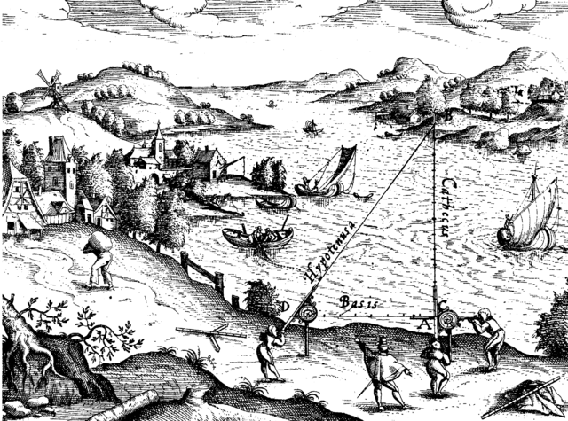
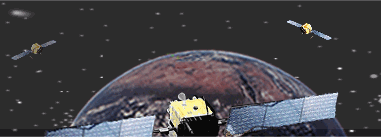

How Google should be thinking about their rumored satellites if they aren’t already (but I bet they are)
About 10PM last night, I saw some interesting news dropped:
WSJ: @google to spend $1billion+ on ~180 @satellites_ to provide Internet access around globe http://t.co/k4LJu5CRR0 pic.twitter.com/BoaCUBzzGv
— Alex Howard (@digiphile) June 2, 2014
Completely light on details (“A billion dollars!” “180 new satellites!” “Internet everywhere!”), the story is that Google will be pouring cash into previously-insurmountable technical challenges, and bringing satellite-borne internet to the world. Awesome! I’ll believe it when I see it, but I’m sure folks will be talking about the possibilities today (as well as about the timing).
But as long as we’re speculating, does the idea of a coordinated constellation of satellites ring any bells with anyone?
The Global Positioning System (GPS) guides us around the world and is approaching indispensability and ubiquity. It runs on signals emanating from a constant overhead mesh of 32 satellites at regular intervals around the planet (24 operational at any given time), and without getting too math-y on a Monday morning, the power is in triangulation (or more accurately, trilateration).

Triangulation in the 16th Century — courtesy Wikimedia Commons
{kind=link}
If your phone can receive a signal from three satellites at once it can figure out its approximate position on Earth. If it can get four, the accuracy goes up. If it can get five, six or even nine at once then the precision continues improving, to the point where your phone will know where it is down to the foot. There have been many technical tweaks to this equation over the years — better receivers, realtime error correction, etc. — but the essential roots are the same: more satellites overhead = more-accurate location.

GPS in action — graphic by PSU
The GPS system has 32 satellites. The Russian equivalent system — GLONASS — has at least 24, the Chinese Baidou system has at least 16, and the EU is developing another array. There are a few high-priced receiver systems used by surveyors and the military that can employ multiple systems at once, but even those are going to have access to signals from no more than about 50 satellites at a time. Even worse, there are almost never more than 12 visible within a given horizon (you can’t get a signal if the Earth is between you and a satellite).
Imagine now that you have — instead of 50 satellites powering your navigation — 180 potential position signals around the globe. Imagine your phone can receive signals from 40 satellites at once. Even without enhanced receiver equipment and correction, that’s enough to
- Pinpoint the lawn chair where you left your phone
- Navigate a wheelchair around a high curb cut on a sidewalk
- Let a surveyor do their job at a fraction of the cost
- Run your mobile device with maximum efficiency; the position and the network connectivity are coming from the same source.
As they develop this idea of “Internet everywhere”, you can bet Google is already thinking about this possible leap in position technology. They’ve disrupted (and I hate that word, so you know I mean it) geospatial technology so many times at this point that I’m losing count, but maybe they’re going to do it again.